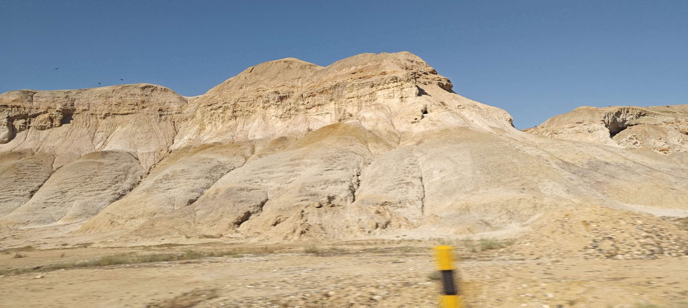
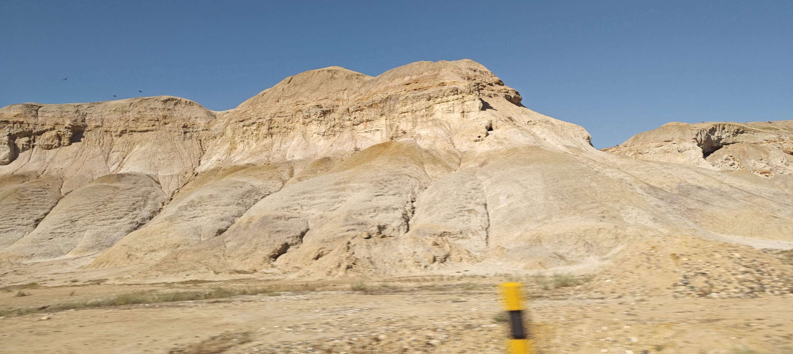

Chaoyi Huang (PiaoZY)

👋 Hi! I'm Chaoyi Huang(黄超逸), a third-year undergraduate student at ACM Honors Class of Shanghai Jiao Tong University, advised by Prof. Yong Yu.
🤖 I'm currently a member of RHOS Lab coadvised by Prof. Cewu Lu and Prof. Yonglu Li.
🌱 My research interest lies in designing intelligent systems that can perceive and interact with the world in a human-like manner.
📫 You can reach me by xhsystem@sjtu.edu.cn. Feel free to contact me in any possible way.
More about me
🏃‍ I'm a fan of many kinds of sports, like 🏀basketball, 🏸badminton, ⚾baseball, 🎾tennis, 🧗‍climbing, and 🤺swordplay. Maybe I'm not that professional, but I can get familiar to a new sport very quickly.
🚗 I'm also a fan of driving and racing cars, especially WRC.
🎧 ♪d(´▽｀)b
🧑‍🍳 I believe that I have a talent for cooking, and I'm working hard to extend recipes.
📷 Love traveling all over the world, and catch the most splendid scenery. Here are some photos that I'm proud of:
 
